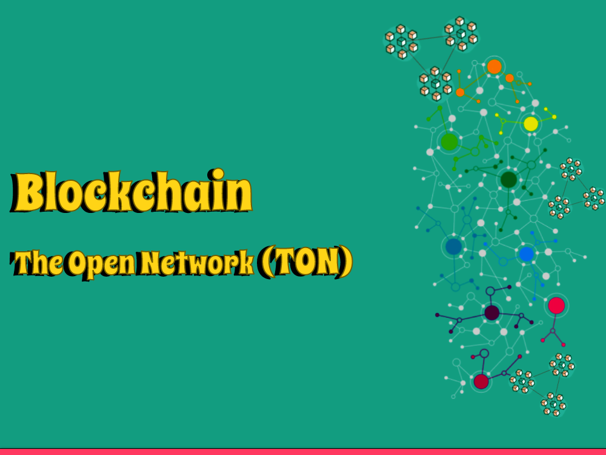

What is Blockchainn - The Open Network (TON)?
Welcome to my blog, where we disentangle the secrets of the computerized world and investigate the interesting domain of blockchain innovation. In this article, we plunge profound into the idea of an open organization blockchain, revealing insight into its importance, attributes, and expected applications. Thus, we should leave on this edifying excursion together!
At its center, an open organization blockchain addresses a decentralized and straightforward computerized record that empowers secure exchanges and data sharing without depending on a focal power. In contrast to conventional concentrated frameworks, where power rests in the possession of a couple of elements, an open organization blockchain embraces the standards of decentralization, inclusivity, and local area administration.
The characterizing element of an open organization blockchain lies in its availability. It permits anybody to take part, approve, and add to the organization's activities. This transparency guarantees that the power is conveyed across a different scope of members, lessening the gamble of control or control by a solitary element. By utilizing cryptographic methods, open organization blockchains give a carefully designed and unchanging record of exchanges, cultivating trust among members.
One of the most notable instances of an open organization blockchain is Bitcoin. Bitcoin's blockchain is open to any individual who needs to join as a digger or hub, empowering distributed exchanges and eliminating the requirement for middle people like banks. This open and permissionless nature of the Bitcoin blockchain has made ready for an upset in the realm of money and computerized monetary standards.
Be that as it may, open organization blockchains are not restricted to digital forms of money. They can possibly change different businesses, including inventory network the board, medical services, casting a ballot situation, and protected innovation freedoms. By giving a common and auditable data set, open organization blockchains can improve straightforwardness, discernibility, and proficiency in these spaces.
Additionally, open organization blockchains can enable people and networks, giving them command over their advanced characters and resources. Using savvy contracts, which are self-executing concurrences with predefined rules, open organization blockchains can computerize processes, work with trustless cooperations, and empower new plans of action.
While open organization blockchains offer tremendous potential outcomes, it's critical to take note of that they additionally face difficulties. Versatility, energy utilization, and administrative worries are among the central points of contention that should be addressed to open their maximum capacity.
All in all, an open organization blockchain addresses a change in outlook by they way we lay out trust, go through with exchanges, and offer data in the computerized age. By embracing receptiveness, decentralization, and straightforwardness, these blockchain networks hold the commitment of making a more attractive, more comprehensive, and secure world. In this way, join the upheaval and investigate the boundless potential outcomes of an open organization blockchain today!
What is the use of Blockchain - The Open Network?
The utilization of blockchain innovation, especially with regards to an open organization, stretches out a long ways past its underlying application in cryptographic forms of money. Here, we investigate a portion of the key use cases and benefits of utilizing an open organization blockchain.
1: Straightforward and Secure Exchanges
An open organization blockchain empowers secure, sealed exchanges without the requirement for delegates. This straightforwardness and security are especially important in monetary exchanges, where the blockchain's decentralized nature lessens the gamble of extortion and control.
2: Decentralized Money (DeFi)
Open organization blockchains have led to the idea of decentralized finance. DeFi applications influence brilliant agreements on the blockchain to make monetary instruments, like loaning and getting stages, decentralized trades, and stablecoins. DeFi empowers people to get to monetary administrations without depending on conventional mediators like banks, expanding monetary inclusivity and lessening costs.
3: Production network The executives
Blockchain innovation can improve inventory network straightforwardness and detectability. By recording every exchange and development of merchandise on an open organization blockchain, partners can undoubtedly follow and confirm the beginning, validness, and excursion of items. This helps battle forging, further develop item quality, and smooth out inventory network processes.
4: Medical care Information The executives
Open organization blockchains can change medical care information the board by guaranteeing the security, protection, and interoperability of clinical records. Patients, specialists, and analysts can safely access and offer wellbeing information while keeping up with command over their data. This can prompt more exact determinations, better coordinated effort, and progressions in clinical examination.
5: Licensed innovation Privileges
The open organization blockchain's changeless and timestamped nature makes it an important instrument for securing and overseeing protected innovation (IP) freedoms. Makers can timestamp their work on the blockchain, giving a changeless record of proprietorship and confirmation of presence. This can work on copyright enlistment, work with authorizing, and lessen debates.
6: Casting a ballot Frameworks
Blockchain innovation can improve the respectability and straightforwardness of casting a ballot frameworks. By recording votes on an open organization blockchain, it turns out to be very challenging to alter or control the outcomes. This increments trust in the electing system and guarantees exact portrayal of the electors aim.
7: Decentralized Web and Content Circulation
Open organization blockchains can uphold the improvement of decentralized web conventions and content dissemination stages. By eliminating unified mediators, clients can straightforwardly interface and trade content without restriction or control. This advances opportunity of articulation, enables content makers, and difficulties the predominance of concentrated stages.
These are several occurrences of how an open association blockchain can be utilized across various organizations. As the advancement continues to grow, new imaginative use cases are most likely going to emerge, disturbing ordinary systems and empowering individuals in the electronic period.
TON Telegram Integration Highlights Synergy of Blockchain Community.
TON (The Open Network) with the Message informing stage, featuring the amazing collaboration it brings to the blockchain local area. Thus, how about we jump into the subtleties and find the meaning of this mix!
Telegram, a famous texting stage known for its safe and security centered highlights, has been at the cutting edge of mechanical development. The Message Open Organization, or TON, addresses their aggressive introduction to the blockchain space. TON plans to upset decentralized correspondence and usher in another period of secure, adaptable, and client driven blockchain applications.
Upgraded Security and Protection: Message has been generally perceived for its hearty safety efforts and start to finish encryption. By coordinating TON's blockchain innovation, Telegram can additionally reinforce the security and protection of its clients' interchanges. The decentralized idea of TON guarantees that messages and exchanges are put away safely on the blockchain, making them impervious to altering or unapproved access.
1: Enhanced Security and Privacy
Message has been generally perceived for its hearty safety efforts and start to finish encryption. By coordinating TON's blockchain innovation, Wire can additionally reinforce the security and protection of its clients' interchanges. The decentralized idea of TON guarantees that messages and exchanges are put away safely on the blockchain, making them impervious to altering or unapproved access.
2: Seamless Micropayments and In-App Transactions
TON's combination with Message opens up new roads for consistent micropayments and in-application exchanges. Clients can use TON's local digital money to send and get subsidizes straightforwardly inside the Wire application, without the requirement for outsider installment processors. This works on the client experience and empowers effective adaptation for content makers, specialist co-ops, and engineers inside the Wire biological system.
Community-driven Governance
TON's integration fosters community-driven governance, aligning with Telegram's vision of empowering its users. The blockchain-based infrastructure allows users to participate in decision-making processes through consensus mechanisms, giving them a voice in shaping the future direction of the platform. This democratic approach strengthens the sense of community ownership and fosters innovation within the Telegram ecosystem.
Scalability and High Throughput
One of the vital benefits of TON is its attention on versatility and high throughput. The coordination with Wire use TON's creative innovation stack, empowering the handling of an enormous number of exchanges each second. This versatility is significant for obliging Message's gigantic client base and guaranteeing that the stage can deal with expanded request without compromising execution.
Engineer Agreeable Biological system
The reconciliation of TON with Message prepares for an extensive variety of blockchain applications. From decentralized finance (DeFi) arrangements and secure computerized personality the executives to content adaptation and decentralized informal communities, the collaboration among TON and Wire opens vast opportunities for designers and business people to assemble creative arrangements inside the biological system.
All in all, the reconciliation of TON with the Telegram informing stage denotes a huge achievement in the blockchain local area. By joining Message's solid and client driven approach with TON's versatile blockchain foundation, this coordination delivers a strong biological system that can possibly change different businesses. As TON proceeds to develop and extend, it will be captivating to observe the weighty applications and the positive effect they have on the blockchain local area and then some.
How can you start with Blockchain - The Open Network?
Is it true or not that you are anxious to jump into the universe of blockchain and investigate the inventive open doors it offers? Look no farther than Solana, an elite presentation blockchain stage that consolidates speed, versatility, and designer cordial highlights. In this far reaching guide, we will walk you through the moves toward begin with Solana, enabling you to leave on your blockchain venture with certainty.
Figuring out Solana's Center Ideas
Prior to jumping into the specialized perspectives, accepting the center ideas of Solana is fundamental. Solana is a decentralized blockchain network intended to give quick and versatile answers for decentralized applications (dApps) and digital currencies. It accomplishes high throughput by using a special blend of agreement calculations, equal handling, and a layered engineering.
Setting Up Your Improvement Climate
To begin expanding on Solana, you'll have to set up your advancement climate. Start by introducing the Solana Order Line Connection point (CLI) apparatus, which permits you to communicate with the Solana organization, convey savvy contracts, and deal with your record. The Solana CLI gives a clear and strong connection point for engineers.
Making a Solana Wallet
Then, you'll require a Solana wallet to store and deal with your computerized resources. Solana upholds different wallet choices, including the Solana Order Line Wallet (CLI), program expansions like Sollet, or equipment wallets viable with Solana. Pick a wallet that suits your inclinations concerning security, openness, and convenience.
Acquiring SOL Tokens
SOL is the local digital currency of the Solana organization and is expected for different tasks, for example, paying for exchange charges and associating with decentralized applications. You can get SOL tokens from digital money trades that help Solana or partake in symbolic deals and airdrops. Guarantee that you follow best practices for safely putting away your SOL tokens.
Investigating Solana Documentation and Designer Assets
Solana gives broad documentation and assets to direct designers at each step. Investigate the authority Solana documentation, which offers top to bottom clarifications, instructional exercises, and code models. Also, join the Solana engineer local area, partake in discussions, and draw in with individual designers to gain from their encounters and gain important experiences.
Fabricating and Sending Your Most memorable Solana dApp
Since you have your advancement climate set up and found out about Solana's ideas, now is the right time to begin fabricating your most memorable decentralized application on Solana. Solana upholds different programming dialects, like Rust, C, and C++, with broad libraries and systems accessible. Influence the Solana SDK to foster shrewd agreements, cooperate with the Solana organization, and make drawing in client encounters.
Testing and Repeating
As you foster your Solana dApp, it's pivotal to thoroughly test and repeat to guarantee its security and usefulness. Solana offers a testnet climate where you can convey and test your savvy contracts and dApps without causing any expenses. Completely test your code, recreate various situations, and accumulate criticism from clients and the engineer local area to improve and refine your application.
Joining the Solana Biological system
Whenever you have constructed and tried your Solana dApp, it's opportunity to feature your creation to the world and join the dynamic Solana biological system. Consider partaking in hackathons, engineer difficulties, or award programs presented by the Solana Establishment to acquire perceivability and possibly secure subsidizing for your venture. Draw in with the Solana people group, share your experiences, and team up with similar people to additional improve your dApp's true capacity.
Conclusion
As we conclude our exploration of the Blockchain - The Open Network, we recognize the immense potential and versatility that distributed ledger technology offers. Public, private, consortium, and hybrid blockchains each serve specific purposes, catering to the diverse needs of industries and organizations worldwide.
By understanding the characteristics and applications of these different types, we can harness the power of blockchain to drive innovation, transparency, and efficiency across various sectors.